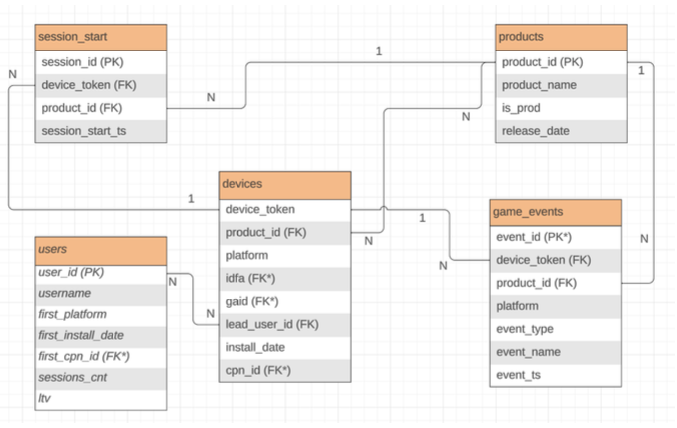
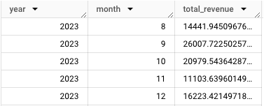
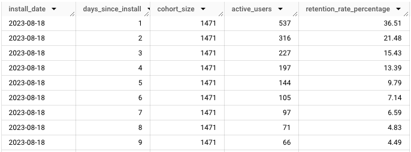
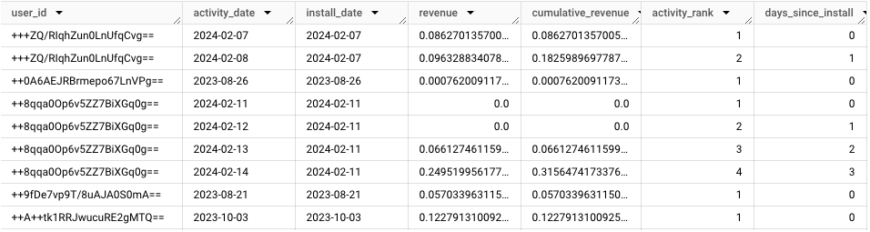

SQL
This document contains problems related to:
- Data Modeling and Entity Relationship Diagram
- Categorize users by number of devices
- Analyze sessions:
- Users in different apps/games (or in multiple games)
- Last session for each user
- Calculate cohort metrics:
- Revenue (cohort size = month)
- Retention (cohort size = date)
- User's Cumulative Revenue from install_date to each activity_date
Problem 1: Define the connections between the described tables (draw an ERD)
Input Tables
users :a table holding the entire list of users, including the following columns:
- user_id, username, first_platform, first_install_date, first_cpn_id sessions_cnt, ltv
devices – a table holding the list of devices and data on their apps installations, including the following columns:
- device_token, app_id, platform, idfa, gaid, lead_user_id, install_date, cpn_id
apps – a table holding the different apps of the company, including the following columns:
- app_id, app_name, is_prod, release_date
session_start – a table holding the events of starting a session in one of the apps, including the following columns:
- session_id, device_token, app_id, session_start_ts (timestamp)
game_event – a table holding all the events performed by a user within the game/product, including the following columns:
- event_id, device_token, app_id, event_type, event_name, event_ts
Solution

Primary Keys (PK) and Foreign Keys (FK):
- Apparently ‘products’ and ‘users’ ‘session_start’ and ‘game_events’ tables have PKs,
- Devices has “device_token”, which at a first sight could look like a PK. However, since
“device_token” is not unique, it can’t be considered a PK.
It’s good practice to have a PK defined for every table, it helps with data integrity,
indexing, and maintaining relationships with other tables. If a table has no PK, there can
be difficulties when updating or deleting specific rows, and making querying the table
less efficient.
- Fields with ‘*’ represent assumed keys.
Relationships:
- users table connects to devices table using a many-to-many relationship.
- devices table connects to session_start table using a one-to-many relationship.
- devices table connects to products table using a many-to-many relationship.
- devices table connects to game_events table using a one-to-many relationship.
- session_start table connects to products table using a many-to-one relationship.
- products table connects to game_events table using a one-to-many relationship.
Problem 2: Write queries that answer the following questions
2.1 Present the number of devices per user and add a category value from the following list: “single device”, “multiple devices”, “no device”
Solution
SELECT
user_id,username,
COUNT(DISTINCT d.device_token) AS devices,
-- create the category value
CASE
WHEN COUNT(DISTINCT d.device_token) > 1 THEN "multiple devices"
WHEN COUNT(DISTINCT d.device_token) = 1 THEN "single device"
ELSE "no device"
END AS category
FROM users AS u
LEFT JOIN devices d
ON u.user_id = d.lead_user_id
GROUP BY user_id,username
ORDER BY user_id
This solution ensures that all users will be displayed (even the “no device” ones) and includes the username.
If we replace the LEFT JOIN (more resource intensive) we can improve the query performance, querying directly the “devices” table. The performance improvement comes with the cost of not having the username and not having the “no device” users, since they won’t appear in the “devices” table.
SELECT
lead_user_id,
COUNT(DISTINCT device_token) as devices,
-- create the category column
CASE
WHEN COUNT(DISTINCT device_token)=0 THEN 'no device'
WHEN COUNT(DISTINCT device_token)=1 THEN 'single device'
WHEN COUNT(DISTINCT device_token)>1 THEN 'multiple devices'
END AS device_category
FROM devices
GROUP BY lead_user_id
2.2 Return a list of usernames that played (had sessions) in both of the following apps: “crazyrace”, “epicbattle”. (give 2 different ways)
Solution
Solution 1: Use Common Table Expressions (CTEs) to isolate devices associated with each game.
-- create CTE to isolate devices per game
WITH
crazyrace_devices AS (
SELECT DISTINCT device_token
FROM session_start
WHERE product_id ='crazyrace'),
epicbattle_devices AS (
SELECT DISTINCT device_token
FROM session_start
WHERE product_id ='epicbattle'),
both_games_devices AS (
SELECT *
FROM crazyrace_devices
INNER JOIN epicbattle_devices USING (device_token))
-- Main Query
SELECT DISTINCT u.username
FROM users u
-- filter only users that played both games
WHERE u.user_id IN (SELECT DISTINCT lead_user_id
FROM devices
WHERE device_token IN (SELECT device_token
FROM both_games_devices))
Solution 2: Use SUBQUERIES and INTERSECT
SELECT username
FROM users
-- filter crazyrace users
WHERE user_id IN ( SELECT lead_user_id
FROM devices
WHERE device_token IN ( SELECT device_token
FROM session_start
WHERE product_id = 'crazyrace')
)
-- get players of both games
INTERSECT
SELECT username
FROM users
-- filter epicbattle users
WHERE user_id IN ( SELECT lead_user_id
FROM devices
WHERE device_token IN ( SELECT device_token
FROM session_start
WHERE product_id = 'epicbattle')
);
2.3 What is the session_id of the last session per user? (the session_id‘s are not necessarily ascending according to the session start time)
Solution
WITH RankSessions AS (
/*
-- This CTE ranks sessions for each user and device-product combination based on the session start timestamp.
-- It’s important to use device_id and product_id as joining keys together to ensure correct matching,
especially in cases where multiple games are played on the same device by different users.
For example, the device “ASG13DL” was used by “u1” to install “crazyrace” and “epicbattle”, and used by “u4” to install “golf-race”.
-- It assigns a row number (rn) to each session, where the most recent session gets rn = 1.
*/
SELECT
u.user_id,
u.username,
d.device_token,
d.product_id,
s.session_id,
s.session_start_ts,
ROW_NUMBER() OVER (
PARTITION BY u.user_id -- to ensure ranking is done per user. Here we don’t use product_id because we focus on the latest session for each user regardless of the specific product.
ORDER BY s.session_start_ts DESC -- to rank the latest session as 1
) AS rn
FROM users AS u
JOIN devices AS d ON u.user_id = d.lead_user_id
JOIN session_start AS s ON d.device_token = s.device_token AND d.product_id = s.product_id
-- If product_id is not used as key, the result will be wrong showing ‘s11’ for both ‘Oliver’ and ‘Sebastian’, because they shared the same device. Examining the data, the correct is ‘Sebastian’ playing ‘golf-race’(s11) and Oliver playing ‘crazyrace’ (s7) for their last sessions.
)
-- Main Query
SELECT user_id,username,session_id,session_start_ts
FROM RankSessions
WHERE rn = 1; -- Filter to only include the most recent session for each user
Problem 3: Calculate total revenue, retention cohort analysis and cumulative revenue using users.csv and user_activities.csv
Input Tables (samples)
users:
| user_id | install_date | country |
|---|---|---|
| abc123 | 2023-11-17 | United States |
| xyz999 | 2023-11-05 | Germany |
| qwe777 | 2023-09-28 | Spain |
user_activities:
| user_id | install_date | country | activity_date | revenue |
|---|---|---|---|---|
| XkiSoEK5f4tyE2ZIOWRs1A== | 2024-03-03 | Indonesia | 2024-03-03 | 0.00065617357790376837 |
| UiR+iATpDo8DcYehle/EPw== | 2024-03-03 | Germany | 2024-03-03 | 0.11618769868339844 |
| g18jNkYM+fIfzjNkxIxhuQ== | 2024-03-02 | Hong Kong | 2024-03-03 | 0.013600176580795429 |
3.1 Write an SQL query to retrieve the total revenue generated by users who signed up in 2023, grouped by month.
Solution
SELECT
EXTRACT(YEAR FROM a.activity_date) AS year,
EXTRACT(MONTH FROM a.activity_date) AS month,
SUM(a.revenue) AS total_revenue
FROM
`user_activities` a
JOIN
`users` u
ON a.user_id = u.user_id
WHERE
EXTRACT(YEAR FROM u.install_date) = 2023
GROUP BY
year, month
ORDER BY
year, month;
output:

3.2 Using the SQL database, perform a retention cohort analysis to understand user retention over time.
Solution
WITH user_activities AS (
SELECT a.user_id,
u.install_date,
a.activity_date,
DATE_DIFF(a.activity_date, u.install_date, DAY) AS days_since_install
FROM user_activities a
JOIN users u
ON a.user_id = u.user_id
),
cohort_sizes AS (
SELECT install_date,
COUNT(DISTINCT user_id) AS cohort_size
FROM users
GROUP BY install_date
),
active_users AS (
SELECT install_date,
days_since_install,
COUNT(DISTINCT user_id) AS active_users
FROM user_activities
GROUP BY install_date, days_since_install
)
SELECT
au.install_date,
au.days_since_install,
cs.cohort_size,
au.active_users,
ROUND((au.active_users * 100.0 / cs.cohort_size), 2) AS retention_rate_percentage
FROM
active_users au
JOIN
cohort_sizes cs
ON au.install_date = cs.install_date
ORDER BY
au.install_date,
au.days_since_install;
output:

3.3 Calculate the cumulative revenue for each user up to each activity date and rank the activities of each user by activity date and show the cumulative revenue.
Solution
SELECT
a.user_id,
a.activity_date,
u.install_date,
a.revenue,
SUM(a.revenue) OVER (PARTITION BY a.user_id ORDER BY a.activity_date) AS cumulative_revenue,
ROW_NUMBER() OVER (PARTITION BY a.user_id ORDER BY a.activity_date) AS activity_rank,
DATE_DIFF(a.activity_date, u.install_date, DAY) AS days_since_install
FROM
user_activities a
JOIN
users u
ON
a.user_id = u.user_id
ORDER BY
a.user_id,
a.activity_date;
